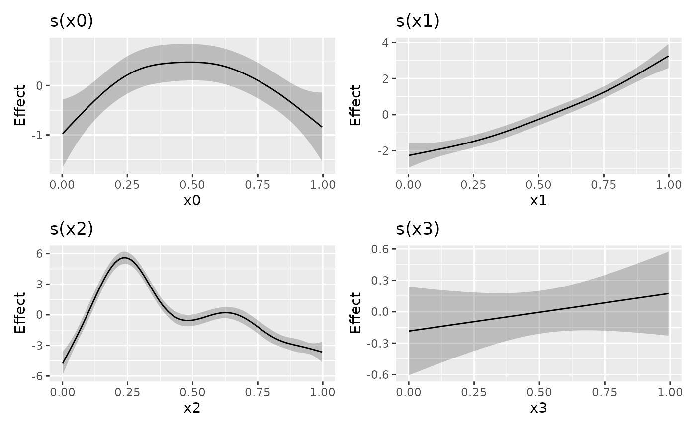
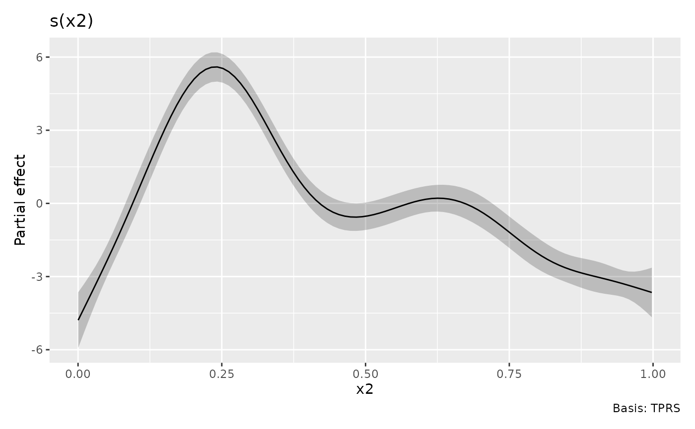
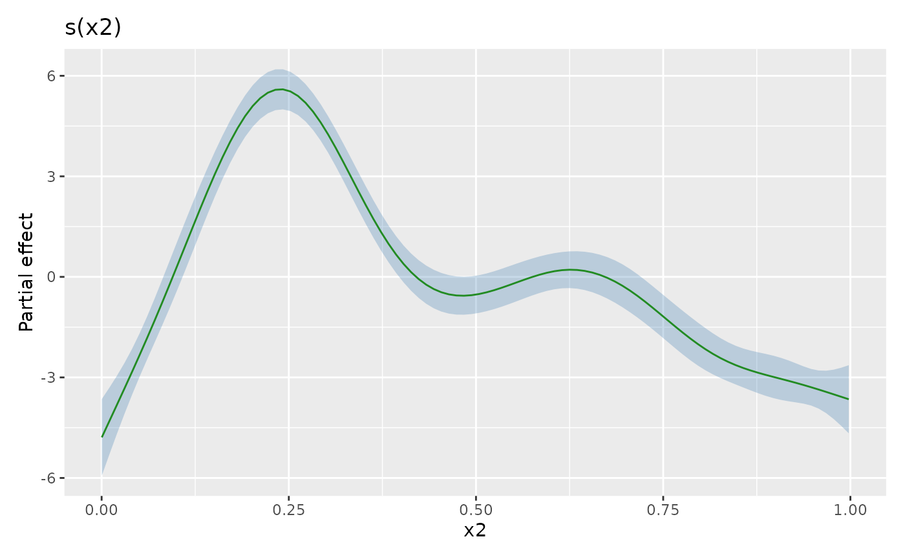
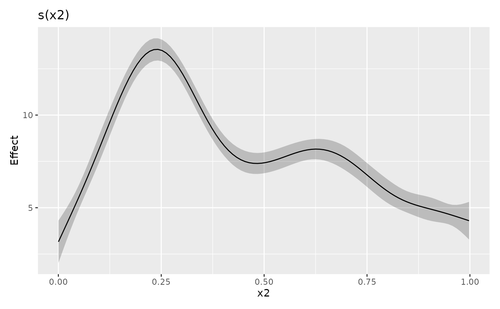
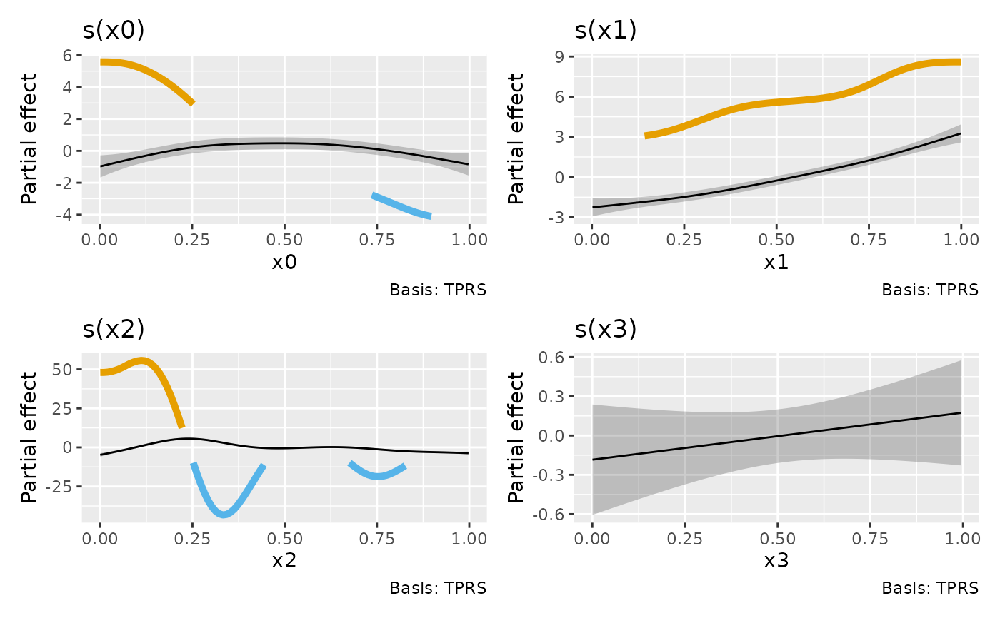

Plot the result of a call to smooth_estimates()
Source: R/smooth-estimates.R
draw.smooth_estimates.RdPlot the result of a call to smooth_estimates()
Usage
# S3 method for smooth_estimates
draw(
object,
constant = NULL,
fun = NULL,
contour = TRUE,
grouped_by = FALSE,
contour_col = "black",
n_contour = NULL,
ci_alpha = 0.2,
ci_col = "black",
smooth_col = "black",
resid_col = "steelblue3",
decrease_col = "#56B4E9",
increase_col = "#E69F00",
change_lwd = 1.75,
partial_match = FALSE,
discrete_colour = NULL,
discrete_fill = NULL,
continuous_colour = NULL,
continuous_fill = NULL,
angle = NULL,
ylim = NULL,
projection = "orthographic",
orientation = NULL,
...
)Arguments
- object
a fitted GAM, the result of a call to
mgcv::gam().- constant
numeric; a constant to add to the estimated values of the smooth.
constant, if supplied, will be added to the estimated value before the confidence band is computed.- fun
function; a function that will be applied to the estimated values and confidence interval before plotting. Can be a function or the name of a function. Function
funwill be applied after adding anyconstant, if provided.- contour
logical; should contours be draw on the plot using
ggplot2::geom_contour().- grouped_by
logical; should factor by smooths be drawn as one panel per level of the factor (
FALSE, the default), or should the individual smooths be combined into a single panel containing all levels (TRUE)?- contour_col
colour specification for contour lines.
- n_contour
numeric; the number of contour bins. Will result in
n_contour - 1contour lines being drawn. Seeggplot2::geom_contour().- ci_alpha
numeric; alpha transparency for confidence or simultaneous interval.
- ci_col
colour specification for the confidence/credible intervals band. Affects the fill of the interval.
- smooth_col
colour specification for the smooth line.
- resid_col
colour specification for the partial residuals.
- decrease_col, increase_col
colour specifications to use for indicating periods of change.
col_changeis used whenchange_type = "change", whilecol_decreaseandcol_increaseare used when `change_type = "sizer"``.- change_lwd
numeric; the value to set the
linewidthto inggplot2::geom_line(), used to represent the perdios of change.- partial_match
logical; should smooths be selected by partial matches with
select? IfTRUE,selectcan only be a single string to match against.- discrete_colour
a suitable colour scale to be used when plotting discrete variables.
- discrete_fill
a suitable fill scale to be used when plotting discrete variables.
- continuous_colour
a suitable colour scale to be used when plotting continuous variables.
- continuous_fill
a suitable fill scale to be used when plotting continuous variables.
- angle
numeric; the angle at which the x axis tick labels are to be drawn passed to the
angleargument ofggplot2::guide_axis().- ylim
numeric; vector of y axis limits to use all all panels drawn.
- projection
character; projection to use, see
ggplot2::coord_map()for details.- orientation
an optional vector
c(latitude, longitude, rotation)which describes where the "North Pole" should be when computing the projection. The third value is a clockwise rotation (in degrees), which defaults to the midrange of the longitude coordinates in the data. The default values fororientationtherefore are `c(20, 0, mean(range(longitude))))`` if this is not specified by the user. See links inggplot2::coord_map()for more information.- ...
additional arguments passed to
patchwork::wrap_plots().
Examples
load_mgcv()
# example data
df <- data_sim("eg1", seed = 21)
# fit GAM
m <- gam(y ~ s(x0) + s(x1) + s(x2) + s(x3), data = df, method = "REML")
# plot all of the estimated smooths
sm <- smooth_estimates(m)
draw(sm)

# evaluate smooth of `x2`
sm <- smooth_estimates(m, smooth = "s(x2)")
# plot it
draw(sm)

# customising some plot elements
draw(sm, ci_col = "steelblue", smooth_col = "forestgreen", ci_alpha = 0.3)

# Add a constant to the plotted smooth
draw(sm, constant = coef(m)[1])

# Adding change indicators to smooths based on derivatives of the smooth
d <- derivatives(m, n = 100) # n to match smooth_estimates()
smooth_estimates(m) |>
add_sizer(derivatives = d, type = "sizer") |>
draw()
